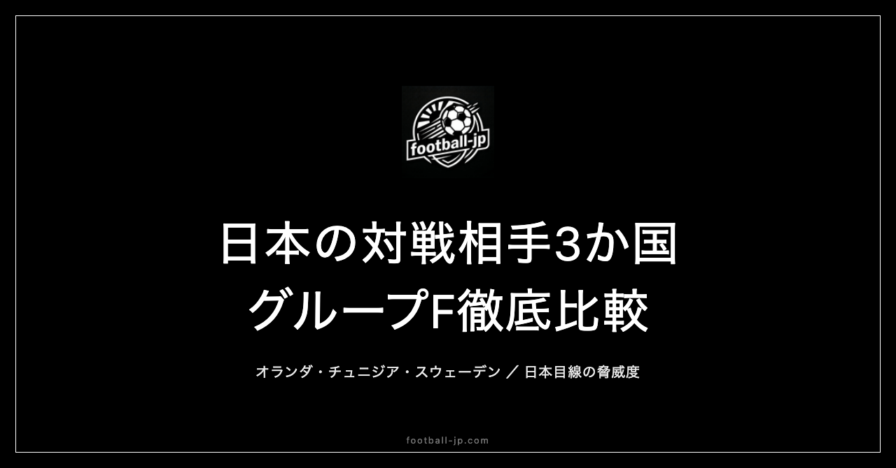

日本代表グループF対戦相手3か国を徹底比較｜オランダ・チュニジア・スウェーデンの脅威度
W杯2026グループFで日本が対戦するのは、オランダ（6月15日）・チュニジア（6月21日）・スウェーデン（6月26日）の3か国だ。FIFAランキング・チームの特徴・注目選手を軸に各対戦相手を分析し、「どこで勝点を奪えるか」という問いに応える脅威度ランキングと突破シナリオを整理する。

グループFの全体像——日程・FIFAランキング
2026年W杯は12グループ・各組4か国構成の新フォーマットを採用する。上位2か国が決勝トーナメントへ進出する点は従来通りだ。
グループFのFIFAランキング（2026年4月時点）は以下の通りである。
| 国 | FIFAランキング |
|---|---|
| 🇳🇱 オランダ | 世界7位 |
| 🇯🇵 日本 | 世界18位（推定） |
| 🇸🇪 スウェーデン | 世界38位 |
| 🇹🇳 チュニジア | 世界44位 |
日本は数字上、オランダに次ぐ2番手に位置する。ただしランキングだけで試合の勝敗は決まらない。グループステージの日程は以下の通りで、いずれも日本時間表記だ。
- 第1戦：日本 vs オランダ（6月15日）
- 第2戦：日本 vs チュニジア（6月21日）
- 第3戦：日本 vs スウェーデン（6月26日）
オランダ徹底分析——世界7位の実力と「王者への渇望」
チームの特徴
ロナルド・クーマン監督率いるオランダは、2022年カタール大会ベスト8という結果に一定の悔しさを抱えて本大会に臨む。2026年を「結果を出す大会」と位置づけているとみられ、本大会への準備度はグループ3か国の中で圧倒的に高い。
戦い方の基本はポゼッションスタイルだ。中盤でボールを落ち着かせながら前線へ供給し、サイドを使って崩すパターンを得意とする。守備組織も整っており、個人の強度と連携の両方が備わっている点がオランダの最大の強みと言える。
注目選手
| 選手 | 所属 | 特徴 |
|---|---|---|
| フィルジル・ファン・ダイク（C） | リバプール | 世界最高水準のCB。対人の強さとラインコントロールは別格 |
| フレンキー・デ・ヨング | バルセロナ | 中盤の心臓。ゲームコントロールと攻守のつなぎ役 |
| ティジャニ・ラインデルス | マンチェスター・シティ | 縦に速いアタックを体現する推進力あるMF |
| コーディ・ガクポ | リバプール | 得点力と守備貢献を兼ねるポリバレントな前線の選手 |
| メンフィス・デパイ | — | コンディションへの不安が指摘されるが26名入り。勝負どころの一発を持つ |
日本にとっての脅威度
過去の対戦成績は0勝1分2敗。唯一の引き分けは2013年の親善試合（2-2）で、2010年南アフリカW杯グループリーグでは0-1で敗れている。ランキング差・個人能力・チームの完成度、すべての面でグループ最強の相手だ。初戦でオランダと当たる日程は厳しい。「勝点1（引き分け）を最低ライン」と位置づけ、消耗を最小限に抑える戦いが求められる局面になる。
チュニジア徹底分析——アフリカの堅守、欧州仕込みの牙
チームの特徴
チュニジアは2022年カタール大会でディフェンディングチャンピオンのフランスを1-0で下した実績を持つ。2026年W杯予選のアフリカ最終予選では10試合9勝1分け・22得点無失点という数字でグループを突破しており、守備の堅さは確かな根拠に基づいている。
堅守速攻を基本としながら、欧州クラブで経験を積んだ若手の加入によりカウンターの鋭さも増している。「楽に点を取れる相手」ではない点は強調しておく必要がある。
注目選手
| 選手 | 所属 | 特徴 |
|---|---|---|
| エリアス・スキリ | フランクフルト | 守備的MF。堂安律のチームメイト。中盤を締めてDFラインと連動 |
| ハンニバル・メイブリ | バーンリー（プレミアリーグ） | 22歳の攻撃的MF。豊富な運動量と創造的なパスで攻撃を組み立てる |
| イスマエル・ガルビ | — | 欧州で経験を積んだアタッカー。縦への推進力が武器 |
日本にとっての脅威度
日本の通算成績はチュニジアに対して5勝1敗と相性は良好だ。唯一の黒星は2022年キリンカップ決勝の0-3大敗だが、直近2023年には2-0で雪辱している。グループF3か国の中では「最も勝点3を狙いやすい相手」という見立てが妥当だ。ただしアフリカ予選での無失点突破が示す守備力は本物であり、前半から積極的に仕掛けて試合の流れを引き寄せる姿勢が勝点3獲得の条件になる。
スウェーデン徹底分析——2トップの破壊力と堅守のジレンマ
チームの特徴
グレアム・ポッター監督（元ブライトン・チェルシー指揮官）が2025年10月に就任し、新体制で本大会を迎える。3バックを基本とした堅守速攻スタイルで、欧州プレーオフ（パスB）ではポーランドを下して出場権を確保した。
スウェーデン最大の特徴は、欧州屈指の2枚——ギョケレシュとイサクの同時起用にある。個々の能力は群を抜くが、チームとしての連携には課題があるという指摘もある。ポッター体制が発足して日の浅い点も、日本にとっては好材料と見ることができる。
注目選手
| 選手 | 所属 | 特徴 |
|---|---|---|
| ヴィクトル・ギョケレシュ | アーセナル | 189cmの大柄FWながら機動力あり。欧州プレーオフ2試合4得点。ゴール前の強さとポストプレー・裏への飛び出しを兼備 |
| アレクサンデル・イサク | リバプール | 左足首骨折からの復帰組。190cm超の体格と繊細な足元技術の組み合わせが厄介。コンディション次第の面も残る |
| ヤシン・アヤリ | ブライトン | 22歳のボランチ。球際の強さとポゼッション能力でチームを安定させる |
日本にとっての脅威度
スウェーデンとの直近の対戦は2002年に遡る。20年以上前のデータであり、「相性」の判断が難しい相手だ。最終戦という日程も厄介で、グループステージ最終節は双方の勝点・順位状況が絡み合う中での戦いになる。ギョケレシュとイサクの2トップを守備組織で封じられれば日本にも勝機が生まれる。ただし個人の破壊力は本物であり、組織的な対応が前提条件となる。
日本目線の「脅威度ランキング」——どこで勝点を取るか
3か国を日本目線で脅威度順に並べると、以下のようになる。
| 順位 | 国 | 評価 |
|---|---|---|
| 1位（最大の脅威） | 🇳🇱 オランダ | 世界7位。個人能力・チーム完成度・戦術の幅すべてで格上。勝点1を最低ラインに設定して冷静に向き合う対象 |
| 2位（脅威だが食える） | 🇸🇪 スウェーデン | ギョケレシュ・イサクの個人的脅威は大きいが、新体制の連携課題・最終戦の日程・イサクのコンディション不透明感が日本に付け入る余地を与える |
| 3位（最も勝点を取りたい相手） | 🇹🇳 チュニジア | 対戦成績5勝1敗・FIFAランキング最下位。堅守は本物だが「最低でも勝点3」を狙いに行ける最有力の相手 |
グループ突破シナリオ
最も現実的な突破シナリオは「チュニジア戦で勝点3、スウェーデン戦で勝点3または1」という道筋だ。オランダ戦での勝点はボーナスとして計算せず、チュニジア・スウェーデン戦に全力を傾ける割り切りが、2026年日本代表のグループ突破の鍵を握る。
第2戦のチュニジア戦が実質的な「分岐点」となる。ここで勝点3を確保できれば第3戦スウェーデン戦を余裕を持って戦える。逆に引き分け以下に終わると第3戦は必勝戦となり、プレッシャーの中でスウェーデンの2トップと向き合うことになる。
| シナリオ | チュニジア戦 | スウェーデン戦 | 想定勝点 |
|---|---|---|---|
| 最良 | 勝（3pt） | 勝（3pt） | 6〜9pt（オランダ次第） |
| 現実的 | 勝（3pt） | 引き分け（1pt） | 4〜7pt |
| 最低限 | 勝（3pt） | 敗（0pt） | 3〜6pt |
グループ突破に必要な勝点の目安は4〜5pt程度とみられる。チュニジア戦での勝点3さえ積めば、スウェーデン戦の引き分けでほぼ突破圏内に届く計算になる。